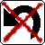

Comment jouer ?
Règles du jeu Othello, d'après la FFO
Othello est un jeu de stratégie à deux joueurs : Noir et Blanc.
Il se joue sur un plateau unicolore de 64 cases, 8 sur 8, appelé othellier.
Ces joueurs disposent de 64 pions bicolores, noirs d'un côté et blancs de l'autre. Par commodité, chaque joueur a devant lui 32 pions mais ils ne lui appartiennent pas et il doit en donner à son adversaire si celui-ci n'en a plus. Un pion est noir si sa face noire est visible et blanc si sa face blanche est sur le dessus.
Notre jeu
|
Au lancement du jeu, quelques réglages sont à faire avant de pouvoir jouer.
Dans un premier temps, il faudra indiquer la taille de la grille (le maximum est 50*50).
Puis, lancer le BenchMark (explication ci-dessous) et indiquer la difficulté souhaitée.
Enfin, préciser si l'on joue entre joueurs ou un joueur contre l'IA |
| Après avoir paramétré le jeu, les jetons sont placés au centre du plateau et par défaut c'est le joueur blanc qui commence. |
|
|
Le logiciel, au cours d'une partie, possède plusieurs zones afin d'informer l'utilisateur : le plateau, l'historique (liste à droite), menu général en haut à gauche ainsi qu'une aide et enfin, en bas, à gauche une barre de notification et à droite, une barre de statistiques sur la partie actuelle. |
| Si l'utilisateur le désire, il peut choisir de revenir à n'importe quelle position jouée en cliquant sur le bouton "Revenir à une position".
Ainsi, il peut recommencer une partie à une position donnée. |
|
Boutons
|
 |
|
|
|
|
|
|
 |
|
|
| Retour |
Retour impossible |
Suivant |
Suivant impossible |
Aide IA |
Pause |
Jouer |
Revenir à une position |
Retour impossible |
Recommencer |
Changement de joueur |